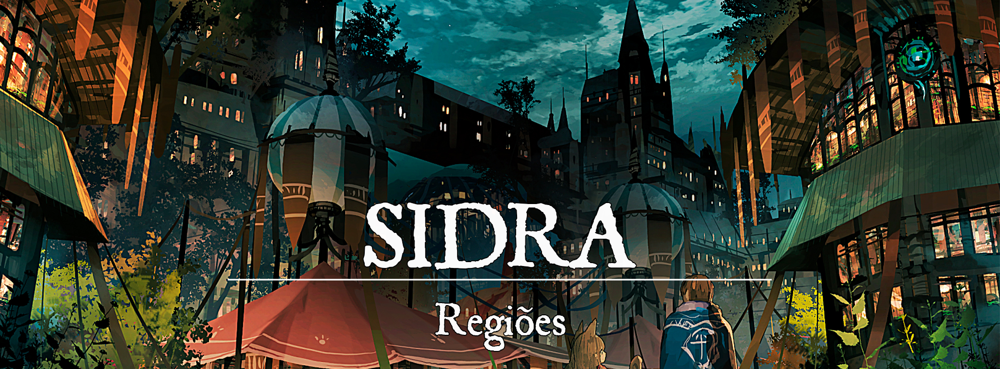

Sidra
Descrição
Sidra dificilmente é considerado um lugar agradável para se viver, ou sequer razoável para os negócios. No entanto, mercadores ousados que decidem se aventurar em Sidra acabam descobrindo oportunidades únicas na cidade, principalmente se pretendem se envolver com acordos sombrios e com as gangues que governam o bairro conhecido como o Caixote.
A região de Sidra não é limitada pelas muralhas da cidade. Ela se expande por planícies e florestas, muitas das quais abrigam vilas e casas de fazenda. Sidra recebe bastante destaque em seus pomares de maçãs e laranjas, e também na produção de bebidas derivadas das frutas.
Descrição Visual:
Sidra é dividida em duas principais regiões: o Caixote e o Cetim.
6577c3621464e9ed10ea012eec997d4a.png |O Caixote
{kind=link}
O Caixote é o bairro do povo comum, um lugar enorme que cresceu sem qualquer restrição. As casas normalmente possuem mais de um andar e quase sempre estão encostadas umas nas outras. Os portos também ficam no Caixote, e é possível alcançá-lo por qualquer via principal. Normalmente, as vias principais comportam canais que são utilizados por pequenas embarcações com destino ao porto. Essas embarcações são utilizadas principalmente pelos nobres mercadores de Sidra.
As gangues sidrianas estão presentes no Caixote, ocupando principalmente as regiões do porto para realizar seus negócios. Apesar de estarem frequentemente disputando entre si, as gangues preferem fazer acordos para evitar o derramamento de sangue e não espantar os fregueses (que são a principal fonte de renda). Os portos são lotados de casas de apostas, bordéis e tabernas, todas pertencentes a alguma gangue da região.
d24d6db238bbd83253c254493c5994b0.png |O Cetim
{kind=link}
O Cetim é o bairro dos nobres mercadores de Sidra, afastado do Caixote e protegido pela guarda da cidade. Todos os nobres de Sidra são mercadores que, assim como as gangues, frequentemente disputam entre si por dinheiro e poder. A maioria dos nobres mercadores não busca sujar as mãos, então contratam pessoas do Caixote por debaixo dos panos.
As casas do Cetim normalmente são as mansões das castas nobres, todas construídas para ostentar a riqueza de cada família. Os canais do porto alcançam o Cetim, e algumas mansões (das castas mais antigas) possuem portos próprios. E além disso, o som do trabalho em oficinas é bastante comum no Cetim. Os sidrianos não são exatamente os melhores artesãos de Gronnemar, e por isso preferem contratar estrangeiros para trabalhar em suas oficinas.
Sociedade
População:
Os humanos compõem a maior parte da população sidriana, mas é muito comum que membros de outras culturas e linhagens se reúnam em grupos e gangues. Essa união faz parecer que tais raças são mais populosas. Normalmente, os principais conflitos entre raças e etnias ocorrem devido a cultura de cada linhagem.
Cultura:
A cultura de Sidra envolve a cultura de muitas outras regiões em Gronnemar. Os nobres sidrianos são extravagantes, adoram pintar seus cabelos e barbas com cores vivas e ostentar peças exóticas em suas vestes. Os nobres possuem um colete que indica sua posição. São peças semelhantes, normalmente pintadas com as cores de sua casta, e que frequentemente são modificadas para se tornarem mais únicas. As gangues do Caixote também carregam seus próprios símbolos que indicam a quem pertencem. Esses símbolos podem ser vestes, tatuagens ou até armas.
Para os sidrianos, cor significa vida. É certo que o Caixote está longe de ser um lugar bonito, com casas de madeira feias e mal construídas, empilhadas umas nas outras como as caixas de um armazém. No entanto, as pessoas sempre buscam vestir trajes com cores vivas e bonitas, às vezes até como um modo de dizer que pertencem a uma gangue ou região.
Caráter:
A presença de tantas gangues em Sidra divide o povo comum. Muitos precisam tomar um lado para sobreviver e por isso acabam brigando muito entre si. No entanto, forasteiros dificilmente vão ser envolvidos nos conflitos internos de Sidra. Os forasteiros trazem dinheiro para gastar em Sidra e por isso vão receber tratamento decente vindo dos proprietários de pequenos e grandes negócios.
Datas e Festividades:
Religião:
Existem muitos deuses presentes em Sidra, mas nenhuma fé é realmente oficial ou proibida. Cada um reza para quem quiser, e portanto que não traga problema às ruas de Sidra, está tudo bem. As gangues costumam adotar algum patrono de acordo com sua própria cultura.
Economia
Sidra depende principalmente do comércio marítimo para se manter. Por toda a região de Sidra, nobres mercadores confeccionam suas mercadorias, que posteriormente são trazidas para Sidra e, em seguida, vendidas para outras cidades-estados. Mel, maçãs e laranjas, tecidos, peles, madeira e, a especialidade da casa, a bebida alcoólica sidra.
O contrabando de drogas ilegais em Sidra é sempre feito na surdina, mas tanto os nobres quanto as gangues se envolvem no assunto.
Serviços:
Governo
O poder em Sidra está concentrado nas mãos do Conselho dos Quatro. O conselho é composto por quatro integrantes, todos pertencentes a alguma casta nobre (normalmente as mais ricas e influentes) e eleitos por toda a vida também pela nobreza.
Poderio Militar:
As castas nobres possuem sua própria guarda, que vestem suas cores e defendem suas mansões. Existe uma guarda local administrada pelo Conselho dos Quatro, os Sentinelas. Os Sentinelas patrulham o Cetim ou servem em missões específicas para o Conselho dos Quatro. Raramente há patrulhas realizadas no Caixote, e normalmente ocorrem com segundas intenções. As pessoas do Caixote não gostam dos Sentinelas, mas evitam entrar em conflito com os soldados, pois sabem que isso pode despertar a ira do Conselho dos Quatro.
Conflito
Os bandidos dentro dos muros de Sidra dificilmente vão assediar forasteiros no Caixote. É mais fácil um forasteiro ser seduzido para um dos exóticos bordéis de Sidra do que ser assaltado. O povo comum é quem normalmente sofre com as gangues e com as leis criadas pelo Conselho dos Quatro.
As guerras de gangues são comuns nos becos e vielas de Sidra, às vezes até arrastando forasteiros para o meio da violência. Andar em Sidra pode ser um desafio, mas é necessário aprender a se virar. Alguém que não consegue se defender está fadado a levar um surra e ser roubado.
Organizações Relevantes
Existem muitas gangues espalhadas pelas ruas de Sidra, reclamando os territórios da cidade para si e criando suas próprias leis. Algumas das gangues de destaque em Sidra são:
Casa do Leão: Os leões são liderados por Francis van der Linde, o autoproclamado Príncipe Sidriano. A Casa do Leão é a gangue mais rica e bem sucedida do Caixote, contando com duas enormes casas de apostas (o Cassino van der Linde e a Casa da Juba Dourada) e diversos bordéis espalhados pelo bairro.
Casa da Rosa: As rosas são lideradas por Pekka Benie, a cafetina mais bem sucedida de Sidra. A Casa da Rosa é responsável por vários dos bordéis no Caixote (elas trabalham até mesmo em casas que não lhes pertencem), mas o Jardim das Rosas, a maior e mais exótica casa de prazeres de Sidra, é sua principal estadia.
Casa do Corvo: Os corvos são liderados por Drakko, que frequentemente é referido como Mãos Negras. A Casa do Corvo trabalha em diversos ramos e por isso muitas vezes são confundidos com mercenários. O Empório do Corvo, um dos bazares mais movimentados de Sidra, é administrado pelos corvos. Curiosamente, os corvos quase sempre são jovens (e seu próprio líder tem apenas 20 anos).
Casa do Martelo: Os martelos são liderados por Dwyn Torunn, um velho anão artífice especialista em armas e explosivos. A Casa do Martelo está envolvida principalmente em contrabando e confecção de explosivos e drogas. Os martelos usam tavernas de fachada e trabalham em oficinas escondidas por todo o Caixote.
Locais Relevantes
NPCs Relevantes
unknown (71).png |Gilbert Montallon
{kind=link}
Gilbert Montallon: Membro do Conselho dos Quatro, é um homem idoso e proprietário de vários vinhedos na região de Sidra. Gilbert é rabugento e não se importa com ninguém além de si mesmo, além de também achar que possui mais direito que seus compatriotas conselheiros por conta de sua idade e experiência.
unknown (72).png |Maryell von Rosen
{kind=link}
Maryell von Rosen: Membra do Conselho dos Quatro, uma mulher por volta de seus 30 anos e que leva pouquíssimo a sério suas responsabilidades como conselheira, mas que está pouco disposta a abandonar o cargo. Durante as reuniões do Conselho, Maryell frequentemente discute (às vezes aos gritos) com o velho Gilbert Montallon, deixando sempre bem claro seu desgosto pelo homem. Maryell é proprietária de muitos dos pomares de maçãs em Sidra.
unknown (73).png |Niko Du Paraquettes
{kind=link}
Niko Du Paraquettes: Membro do Conselho dos Quatro, Niko é o mais jovem entre os conselheiros e, de longe, o mais disposto com suas responsabilidades. O jovem Niko é o proprietário de uma frota em Sidra, além de também ser responsável pela construção e manutenção de vários outros navios.
unknown (74).png |Misha Gaillot
{kind=link}
Misha Gaillot: Membro do Conselho dos Quatro, Misha é um homem com seus mais de 40 anos, um pouco tímido mas com ideias criativas quando lhe convém. Costuma trabalhar ao lado de cada um dos membros do conselho (Niko em especial), mas dificilmente é produtivo em reuniões extensas. Misha é um artesão de renome, conhecido pela confecção de trajes finíssimos.
unknown (75).png |Francis van der Linde
{kind=link}
Francis van der Linde: O autoproclamado Príncipe Sidriano é um homem de negócios, frio e calculista. Quando Francis herdou a liderança da Casa da Fortuna, a gangue parecia fadada ao fracasso. Foi apenas com sua determinação, temperada com muita violência e algumas apostas, que conseguiu estabelecer a Casa da Fortuna como uma das gangues mais importantes do Caixote.
unknown (76).png |Pekka Benie
{kind=link}
Pekka Benie: Pekka Benie, conhecida por usar um canhão de navio como arma (o qual ela segura com bastante facilidade), é a líder da Casa da Rosa. Pekka é uma mulher extremamente forte e de temperamento explosivo, mas é vista como uma mãe por sua gangue (que é composta quase inteiramente por mulheres). As prostitutas de seus bordéis e de casas aliadas que as contratam são protegidas por Pekka e suas garotas. Afinal, elas são todas um investimento para a gangue.
unknown (77).png |Drakko Vermelho
{kind=link}
Drakko Vermelho: O jovem Drakko, conhecido por aceitar os trabalhos mais sangrentos de Sidra, ganhou o apelido por todas as vezes que foi visto manchado de sangue dos pés à cabeça. Assassinato, contrabando ou roubo, os corvos fazem de tudo. Drakko é ambicioso e frequentemente está tentando maneiras de expandir a influência da Casa do Corvo.
unknown (78).png |Dwyn Torunn
{kind=link}
Dwyn Torunn: O velho Dwyn é respeitado não apenas como um grande inventor, mas também como um dos líderes de gangue mais importantes da história de Sidra. Dwyn aprimorou o próprio Caixote, construiu para aliados e inimigos, e garantiu que seu nome seria lembrado para sempre pelas ruas de Sidra.
Origem
Os primeiros habitantes da região de Sidra foram as pessoas que ficaram desabrigadas com as guerras que eram travadas em Gronnemar. Mesmo que os conflitos estivessem próximos de acabar, essas pessoas já não tinham mais uma casa para voltar, tampouco a esperança de que a paz seria mantida. Foi naquela região intocada pelas chamas da batalha que eles recomeçaram, onde desabrocharam os primeiros brotos dos pomares de Sidra.
Posteriormente, os grandes conflitos de Gronnemar cessavam para dar início à primeira era após um longo período de escuridão. As grandes nações gronnemari passavam a se dedicar ao comércio e ao desenvolvimento econômico, tornando-se ainda mais poderosas com o passar dos anos. Por muito tempo, os pomares de Sidra permaneceram escondidos das outras cidades-estados, mas eventualmente foram descobertos pelos fortunatas e kotkanos. Inicialmente, apenas alguns acordos comerciais foram realizados. Os pomares de maçãs, bem como muitas das ervas que os sidrianos cultivavam.
Mais e mais acordos foram feitos, cada região querendo tomar um pouco de Sidra para si. Os proprietários de terras sidrianas foram consumidos pela ganância e começaram a tomar regiões vizinhas para si (normalmente regiões de rivais, visto que a terra estava dividida entre a influência de Kotka e Fortuna). A paz durou pouco tempo, e os fazendeiros começaram a brigar entre si até eventualmente estourarem uma guerra civil que ficou conhecida como a Batalha das Maçãs. Enquanto isso, Kotka e Fortuna assistiam o desenrolar do conflito, mas sem se envolver diretamente. A verdade é que nenhuma das cidades-estados estava interessada em participar de uma nova guerra, então deixaram os sidriano se resolverem enquanto continuavam obtendo seus lucros.
Da mesma maneira que a paz não perdurou tanto, o conflito se encerrou rapidamente. Os sidrianos não estavam interessados em lutar até que tudo se tornasse cinzas, e tampouco queriam que suas terras fossem tomadas pelas duas grandes cidades-estados vizinhas. Nos anos seguintes, incontáveis acordos foram assinados pelos proprietários de terras sidrianos para estabelecer uma ordem na região. Líderes foram eleitos e reeleitos, homens expandiram suas terras enquanto outras perdiam, lucro e miséria, mas sempre dentro de uma lei ou acordo. Eventualmente, uma cidade foi construída para estabelecer o poder de Sidra e expandir o comércio pelos mares.
Desde os primórdios da criação da cidade, mercadores menos afortunados passaram a se reunir em grupos para tentar novos negócios com o pouco que lhes restava. Boa parte desses negócios mudou seu ramo e proprietário com o passar dos anos. Esses grupos, longe de serem considerados da mesma nobreza que um dia foram, começaram a brigar entre si por território ou por algumas moedas de ouro. Os acordos não eram mais tão cordiais como foram gerações anos atrás, e dificilmente eram mantidos por muito tempo. As gangues de Sidra cresceram em meio à pobreza e violência, mas sempre se adaptaram para enfrentar o dia seguinte.